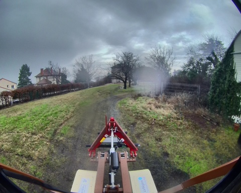
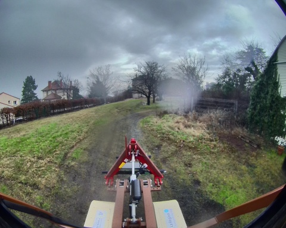

Chemin complet : /data/synchro_data/Innodura/Agrivia/Données/2025_bag/rain_loop_1_20_01_2025

Files: rain_loop_1_20_01_2025_0.db3
Bag size: 4.9 GiB
Storage id: sqlite3
Duration: 120.956433482s
Start: Jan 20 2025 16:06:27.820796267 (1737385587.820796267)
End: Jan 20 2025 16:08:28.777229749 (1737385708.777229749)
Messages: 89117
Topic information: Topic: /alpo/joint_states | Type: sensor_msgs/msg/JointState | Count: 12084 | Serialization Format: cdr
Topic: /alpo/imu/velocity | Type: geometry_msgs/msg/TwistStamped | Count: 12084 | Serialization Format: cdr
Topic: /alpo/imu/mag | Type: sensor_msgs/msg/MagneticField | Count: 12084 | Serialization Format: cdr
Topic: /alpo/imu/data | Type: sensor_msgs/msg/Imu | Count: 12084 | Serialization Format: cdr
Topic: /alpo/base/bridge/vehicle_controller/odom | Type: nav_msgs/msg/Odometry | Count: 1205 | Serialization Format: cdr
Topic: /tf_static | Type: tf2_msgs/msg/TFMessage | Count: 6 | Serialization Format: cdr
Topic: /alpo/lidar/pointcloud_synchro | Type: sensor_msgs/msg/PointCloud2 | Count: 596 | Serialization Format: cdr
Topic: /alpo/imu/imu_data_str | Type: std_msgs/msg/String | Count: 12085 | Serialization Format: cdr
Topic: /tf | Type: tf2_msgs/msg/TFMessage | Count: 2166 | Serialization Format: cdr
Topic: /alpo/gps/nmea_sentence | Type: nmea_msgs/msg/Sentence | Count: 18044 | Serialization Format: cdr
Topic: /parameter_events | Type: rcl_interfaces/msg/ParameterEvent | Count: 0 | Serialization Format: cdr
Topic: /rosout | Type: rcl_interfaces/msg/Log | Count: 1267 | Serialization Format: cdr
Topic: /alpo/joystick/joy | Type: sensor_msgs/msg/Joy | Count: 977 | Serialization Format: cdr
Topic: /diagnostics | Type: diagnostic_msgs/msg/DiagnosticArray | Count: 1441 | Serialization Format: cdr
Topic: /alpo/gps/vel | Type: geometry_msgs/msg/TwistStamped | Count: 1187 | Serialization Format: cdr
Topic: /alpo/camera/image_synchro | Type: sensor_msgs/msg/Image | Count: 597 | Serialization Format: cdr
Topic: /alpo/robot_description | Type: std_msgs/msg/String | Count: 1 | Serialization Format: cdr
Topic: /alpo/gps/fix | Type: sensor_msgs/msg/NavSatFix | Count: 1209 | Serialization Format: cdr